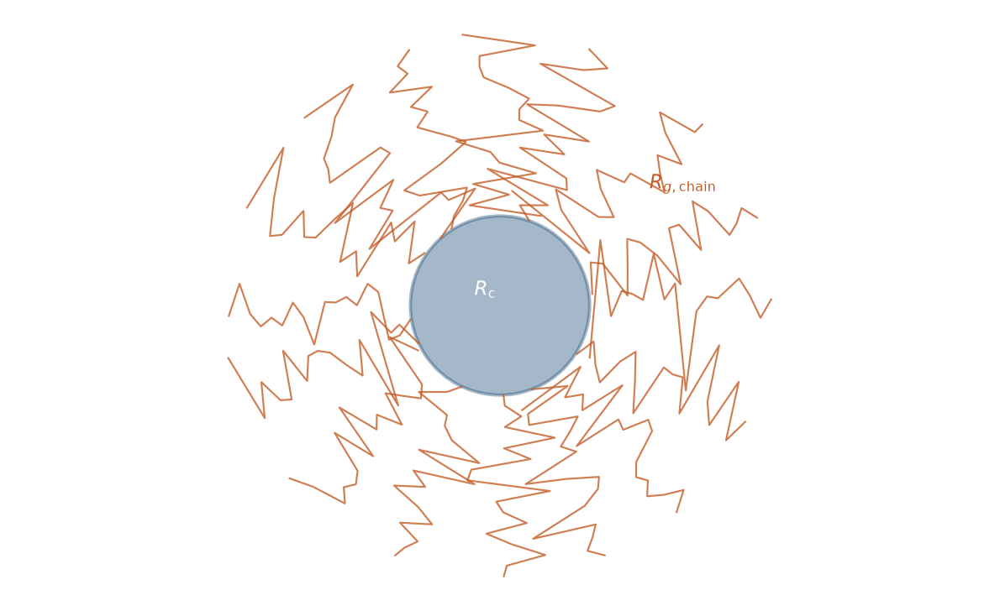
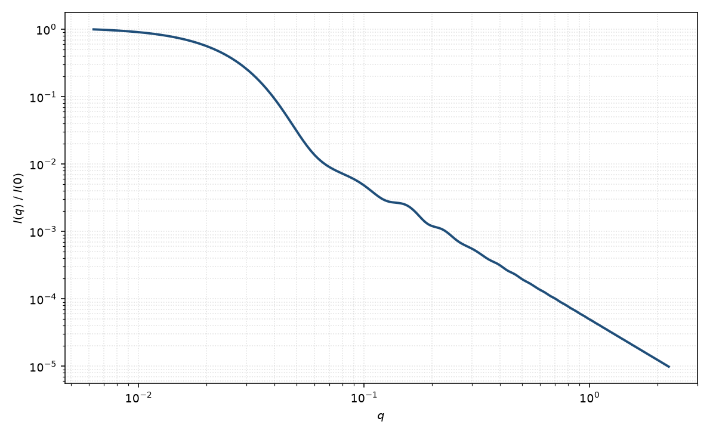

聚合物胶束
polymer micelle
适用场景
球形聚合物胶束由不溶核与溶于溶剂的冠状链组成。Pedersen 与 Gerstenberg（1996）把核当作均匀球，把冠状当作接在核表面的高斯链，并包含核–链与链–链干涉。适用于嵌段共聚物胶束、星形胶束以及“核壳球拟合在中高 $q$ 留下链状残差”的样品。
若冠状很浓、排除体积使链拉伸，均匀壳可能是更好的第一近似；若臂数很少、链稀疏，则更接近星形聚合物。本页对应稀溶液、非贯穿的 Pedersen–Gerstenberg 图像。
物理图像
$I(q)$ 四项：核自相关（球 $P_c$）、单链自相关（Debye 函数）、核–链交叉项、不同链之间的交叉项。低 $q$ 由整体胶束 $R_g$ 主导；中 $q$ 核振荡；高 $q$ 转入冠状链的 $q^{-2}$ 特征（高斯链）。聚集数 $N_{\mathrm{agg}}$ 同时放大核体积与冠状交叉项。
示意图


核心公式
出发点
胶束由一个不溶核与 $N_{\mathrm{agg}}$ 根接枝冠状链组成。总超额散射长度是核与各链之和
$$F(\mathbf{q})=\beta_c F_c(\mathbf{q})+\beta_s\sum_{k=1}^{N_{\mathrm{agg}}}F_{\mathrm{chain},k}(\mathbf{q}),$$其中 $\beta_c,\beta_s$ 为核与单链的超额散射长度，$F_c$、$F_{\mathrm{chain},k}$ 为归一化振幅。稀释强度正比于 $\langle|F|^2\rangle$；把平方展开即得核、单链、核–链与链–链四项。
推导
核当作均匀球：$F_c=\Phi(qR_c)$，$P_c=\Phi^2$，$\Phi(x)=3(\sin x-x\cos x)/x^3$。单链取高斯链，自相关是 Debye 函数。令 $x=q^2 R_g^2$，
$$P_{\mathrm{chain}}(q)=\frac{2(\mathrm{e}^{-x}-1+x)}{x^2},\qquad \psi(x)=\frac{1-\mathrm{e}^{-x}}{x}.$$$\psi$ 是链的形状振幅。核–链相位差来自链质心相对核表面的位移 $d$，取向平均给出 $\sin[q(R_c+d)]/[q(R_c+d)]$。交叉项因而含 $\Phi(qR_c)\,\psi\,\mathrm{sinc}[q(R_c+d)]$。链–链交叉在无表面相关时是 $[\psi\,\mathrm{sinc}]^2$。收集系数（Pedersen & Gerstenberg）
$$I(q)\propto N_{\mathrm{agg}}^2\beta_c^2 P_c(q)+N_{\mathrm{agg}}\beta_s^2 P_{\mathrm{chain}}(q)+2N_{\mathrm{agg}}^2\beta_c\beta_s S_{cs}(q)+N_{\mathrm{agg}}(N_{\mathrm{agg}}-1)\beta_s^2 S_{ss}(q).$$$S_{cs},S_{ss}$ 即上述 $\Phi$、$\psi$ 与 $\mathrm{sinc}[q(R_c+d)]$ 的组合。第一项 $\propto N_{\mathrm{agg}}^2$ 因核体积随聚集数放大；单链自相关只 $\propto N_{\mathrm{agg}}$。
低 $q$ 与渐近
$q\to 0$ 时 $P_c=P_{\mathrm{chain}}=S_{cs}=S_{ss}=1$，$I(0)\propto(N_{\mathrm{agg}}\beta_c+N_{\mathrm{agg}}\beta_s)^2$，即整个胶束超额散射长度的平方。整体 $R_g$ 由核的 $3R_c^2/5$ 与冠状壳层贡献合成，大于裸核。
中 $q$ 可见核球振荡；$\Phi(qR_c)=0$ 的根（第一根 $\approx 4.49/R_c$）被链项填浅，一般达不到零。高 $q$ 核 Porod $q^{-4}$ 被冠状 Debye 的 $q^{-2}$ 盖过（高斯链），这是相对密实核壳球的指纹。$\beta_s\to 0$ 或对比匹配冠状时回到均匀核球。
参数表
| 参数 | 符号 | 含义 | 单位 | 典型范围 |
|---|---|---|---|---|
| 核半径 | $R_c$ | 不溶核的等效球半径 | Å | 20–200 Å |
| 链 Rg | $R_g$ | 单根冠状链的回转半径 | Å | 10–80 Å |
| 聚集数 | $N_{\mathrm{agg}}$ | 每个胶束的嵌段数目 | 无量纲 | 10–200 |
| 核 / 链衬度 | $\beta_c,\beta_s$ | 超额散射长度 | cm | 由 SLD 与体积 |
| 接枝位移 | $d$ | 链质心相对核表面的位移 | Å | 约 $R_g$ 量级 |
拟合注意
$N_{\mathrm{agg}}$、$R_c$ 与核衬度通过核体积耦合；冠状 $R_g$ 与 $\beta_s$ 在高 $q$ 相关。优先用 NMR/浓度估计聚集数或用对比匹配核/冠状之一。排除体积与非高斯链会改变高 $q$ 指数，勿把 $R_g$ 解释成真实链尺寸而不声明高斯假设。
取向无关（球核 + 各向同性冠状）。磁性若只存在于核，磁形式因子接近核球，冠状对磁通道不可见——这是分离核尺寸的有用约束。
相近模型
参考文献
- Pedersen, J. S.; Gerstenberg, M. C. Scattering form factor of block copolymer micelles. Macromolecules 1996, 29, 1363–1365. DOI: 10.1021/ma951646z